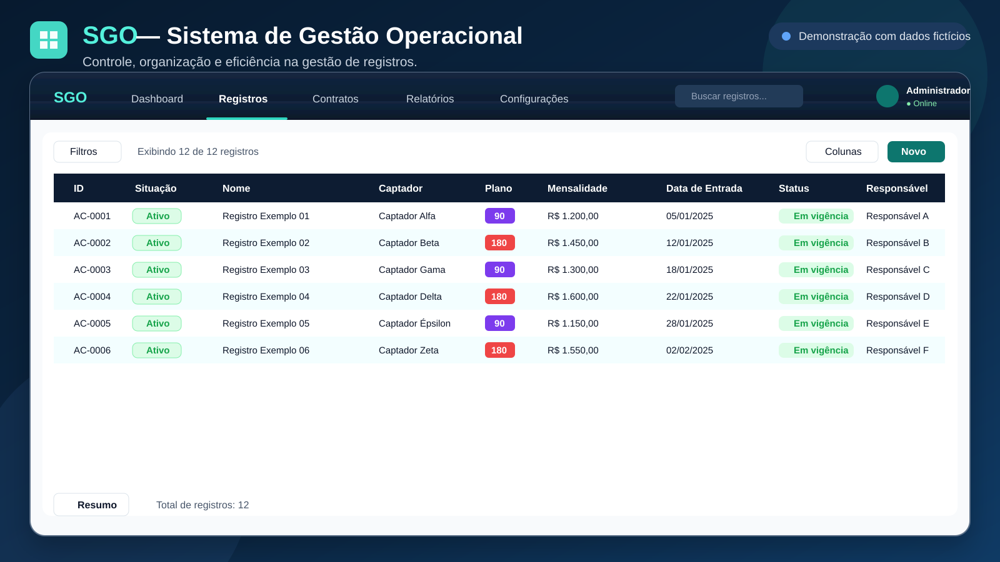

SGO — Sistema de Gestão Operacional
Sistema em Google Sheets para centralizar gestão administrativa, financeira e operacional, com dashboard, cobranças, caixa, estoque, demandas e controle mensal.
- Google Sheets
- Dashboard
- Financeiro
- Estoque
- Cobranças